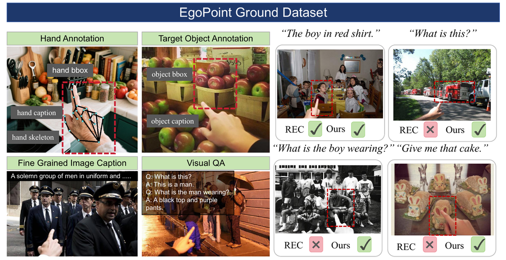
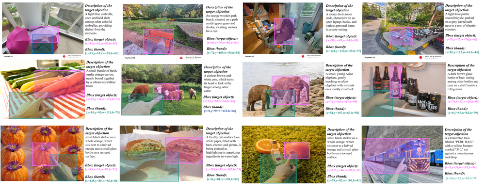

Tsinghua University · Dalian University of Technology · Northwestern Polytechnical University · Apple
Traditional Visual Grounding (VG) predominantly relies on textual descriptions to localize objects, a paradigm that inherently struggles with linguistic ambiguity and often ignores non-verbal deictic cues prevalent in real-world interactions. To bridge this gap, we introduce EgoPoint-Ground, the first large-scale multimodal dataset dedicated to egocentric deictic visual grounding. Comprising over 15k interactive samples in complex scenes, the dataset provides rich, multi-grained annotations including hand-target bounding box pairs and dense semantic captions. We establish a comprehensive benchmark and propose SV-CoT, a novel baseline framework that synergizes gestural and linguistic cues through a Visual Chain-of-Thought paradigm, achieving an 11.7% absolute improvement over existing methods.


Feature comparison of EgoPoint versus representative reference datasets. ✓ = feature present, ✗ = absent.
| Dataset | Language | Gesture | Embodied | Ego/Exo | Pose | VQA | Source | No. Images |
|---|---|---|---|---|---|---|---|---|
| PointAt | ✗ | ✓ | ✓ | Ego | ✗ | ✗ | Lab | 220 |
| ReferAt | ✗ | ✓ | ✓ | Exo | ✗ | ✗ | Lab | 242 |
| RefCOCO | ✓ | ✗ | ✗ | Exo | ✗ | ✗ | MSCOCO | 19,994 |
| RefCOCO+ | ✓ | ✗ | ✗ | Exo | ✗ | ✗ | MSCOCO | 19,992 |
| RefCOCOg | ✓ | ✗ | ✗ | Exo | ✗ | ✗ | MSCOCO | 26,711 |
| Flickr30k ent. | ✓ | ✗ | ✗ | Exo | ✗ | ✗ | Flickr30K | 31,783 |
| GuessWhat? | ✓ | ✗ | ✗ | Exo | ✗ | ✗ | MSCOCO | 66,537 |
| Cops-Ref | ✗ | ✓ | ✗ | Exo | ✗ | ✗ | COCO/Flickr | 75,299 |
| YourRefIt | ✓ | ✓ | ✓ | Exo | ✗ | ✗ | Crowd-Sourced | 497,348 |
| Ours | ✓ | ✓ | ✓ | Ego | ✓ | ✓ | Mixed/Hybrid | 15,338 |
Note: Our dataset is the first to simultaneously provide Language, Gesture, Embodied, Egocentric perspective, Pose annotations, and VQA pairs — uniquely supporting multimodal deictic grounding research.
Quantitative results on the Egocentric Deictic Visual Grounding (EDG) task. Precision @ IoU thresholds (0.3 / 0.5 / 0.7), evaluated on Hybrid and Real-World splits.
| Model | EDG — Hybrid | EDG — Real-World | ||||
|---|---|---|---|---|---|---|
| P@0.3 ↑ | P@0.5 ↑ | P@0.7 ↑ | P@0.3 ↑ | P@0.5 ↑ | P@0.7 ↑ | |
| Qwen3-VL-4B | 0.743 | 0.702 | 0.622 | 0.747 | 0.699 | 0.616 |
| Qwen2.5-VL-3B | 0.731 | 0.671 | 0.592 | 0.738 | 0.632 | 0.488 |
| Qwen3-VL-8B | 0.726 | 0.676 | 0.598 | 0.789 | 0.701 | 0.593 |
| Qwen2.5-VL-7B | 0.721 | 0.653 | 0.563 | 0.776 | 0.688 | 0.533 |
| LLaVA-OneVision-4B | 0.679 | 0.475 | 0.145 | 0.654 | 0.431 | 0.129 |
| InternVL-3.5-8B | 0.554 | 0.413 | 0.270 | 0.592 | 0.427 | 0.214 |
| GroundingGPT | 0.447 | 0.358 | 0.219 | 0.354 | 0.259 | 0.127 |
| DeepSeek-VL2 | 0.344 | 0.293 | 0.259 | 0.364 | 0.296 | 0.245 |
| LLaVA-v1.5-13B | 0.338 | 0.198 | 0.079 | 0.274 | 0.128 | 0.042 |
| Ferret-7B | 0.282 | 0.221 | 0.181 | 0.258 | 0.203 | 0.160 |
| Florence2-Large | 0.241 | 0.188 | 0.149 | 0.234 | 0.193 | 0.153 |
| Florence2-Base | 0.149 | 0.110 | 0.080 | 0.141 | 0.121 | 0.075 |
| SV-CoT [Qwen3-VL] (Ours) | 0.795 | 0.756 | 0.718 | 0.820 | 0.818 | 0.727 |
| Human Study | 0.979 | 0.914 | 0.846 | 0.994 | 0.918 | 0.874 |
Performance on the Deictic Visual Question Answering task. Acc. = Accuracy, M-F1 = Macro-F1, Rec. = Recall.
| Model | D-VQA (Hybrid) | D-VQA (Real-World) | ||||
|---|---|---|---|---|---|---|
| Acc. ↑ | M-F1 ↑ | Rec. ↑ | Acc. ↑ | M-F1 ↑ | Rec. ↑ | |
| LLaVA-OneVision-8B | 0.531 | 0.519 | 0.548 | 0.544 | 0.525 | 0.526 |
| LLaVA-OneVision-4B | 0.510 | 0.535 | 0.547 | 0.521 | 0.476 | 0.487 |
| Qwen3-VL-8B | 0.494 | 0.484 | 0.490 | 0.517 | 0.510 | 0.503 |
| Qwen3-VL-4B | 0.471 | 0.488 | 0.495 | 0.456 | 0.507 | 0.489 |
| Qwen2.5-VL-7B | 0.457 | 0.427 | 0.445 | 0.444 | 0.428 | 0.411 |
| DeepSeek-VL2-Small | 0.413 | 0.459 | 0.455 | 0.457 | 0.523 | 0.506 |
| DeepSeek-VL2 | 0.412 | 0.461 | 0.473 | 0.393 | 0.397 | 0.390 |
| InternVL-3.5-4B | 0.445 | 0.461 | 0.445 | 0.433 | 0.368 | 0.367 |
| GroundingGPT | 0.334 | 0.363 | 0.364 | 0.392 | 0.352 | 0.350 |
| LLaVA-v1.5-13B | 0.267 | 0.249 | 0.245 | 0.147 | 0.150 | 0.137 |
| Human Study | 0.811 | 0.631 | 0.653 | 0.877 | 0.756 | 0.753 |
We propose Spatial-Reasoning-based Visual Chain-of-Thought (SV-CoT), a zero-shot baseline that reformulates grounding as a structured inference process. The hand bounding box is aligned into discrete spatial anchors, and grounding proceeds through a latent reasoning chain:
Analyze hand orientation within the spatial anchor to infer a 2D pointing vector v⃗
Cast a virtual ray to spatially prune distractors into a candidate set Ω
Multi-modal alignment check to resolve the target or explicitly reject via threshold τ
SV-CoT achieves +11.7% absolute improvement over language-only baselines by synergizing gestural and linguistic cues through explicit geometric reasoning.
First large-scale multimodal dataset for first-person hand-pointing referring, with 15k+ samples spanning hand poses, object locations, and referring expressions.
Evaluation benchmark for hand-pointing referring expression resolution, systematically analyzing limitations of SOTA models on EDG and D-VQA tasks.
Visual Chain-of-Thought framework that fuses gestural and linguistic information, achieving 11.7% improvement in referring localization accuracy.
Dataset, benchmark code, and model publicly released to advance research in multimodal referring and embodied AI.